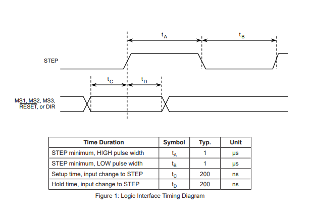
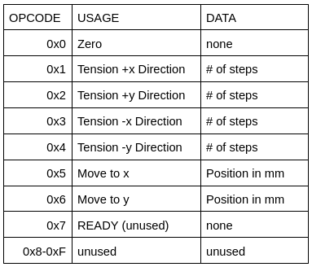

Firmware Design
Optimized down to the byte.
Our firmware was designed with performance in mind. We knew from the start the speed would make or break our system. Controlling steppers and handling serial data is enough to overwhelm the Arduino’s microcontroller if it is not approached carefully. For our gantry to move cleanly, we needed our main loop to run fast enough to create the illusion that each component was running in parallel perfectly synchronized.
The firmware was written in Arduino C and has 3 components. It was designed to be largely modular so that we could easily develop components in parallel and swap out different versions as needed. This was particularly valuable when we ran into an issue with high serial parsing latency. The modular design allowed us to swap out the serial parsing code and command format in just an afternoon.
All of our code is available on GitHub: simrunm/HandofGod
Zeroing
The first component in the zeroing procedure. Zeroing is unique because we must be able to stop motion at any time, and want to move at a safe speed instead of the highest speed possible. We accomplish zeroing using the Arduino hardware interrupts to halt motion when the carriage reaches an endstop. For this portion, we control the steppers manually (without a library) using precise pin timings to allow immediate stopping.
Movement
Stepper Control
Part of our motivation for writing our own stepper code was so that we could optimize the timings using direct register access and inline assembly for more precise delay. The arduino provided digitalWrite function takes 50-60 cycles to execute which is almost 3us and our stepper drivers respond to pulses as short as 1us. The zeroing procedure was intended to be the proving ground for writing our own stepper library designed to handle our systems synchronous motion constraints. Ultimately, although it was an interesting area to explore, we decided that it was not worth the time investment given the minimal value added compared to existing libraries.
Using a Library
To control the motion of the gantry, we ended up using the Speedy Stepper Library. We are able to calculate the number of steps for each motor based on the current and commanded position. We also calculate the relationship of the velocities of each motor to keep the system in tension.
Serial Interface
The final component of our firmware is the serial interface. The serial interface exposes the zeroing and positioning functionality, as well as the ability to move individual motors for tensioning. We initially used string commands and Serial.readln, but found that was over a second of latency for parsing commands. We still aren’t quite sure what the culprit was; after attempting to diagnose the issue, we replaced the serial parsing with a new optimized format so we could continue working.
The command format we settled on sends commands as 2 bytes. The first 4 bits are the operation code which indicates which subroutine should be called. The remaining 12 bits are data, which is parsed as an integer and allows us to send 0-4095 as a value. This is more than sufficient for our gantry which moves at most 490mm in one direction. This format is advantageous because commands are extremely small over the wire and can be parsed using 3 boolean operations instead of slow and costly string parsing. With this format, the parsing time is reduced from around a second to just a few MCU cycles.
Next Steps
Based on our understanding of stepper motor behavior, we believe our zeroing procedure is to blame in part for the high temperatures our motors reach. Our hypothesis is that the slower speed and lack of acceleration means the shaft fully stops after each step, which increases the internal resistance and thus the energy dissipated as heat. Because the firmware tracks the gantry’s position after each movement, it would be possible to modify our software to only zero once instead of before each throw. Another potential mediation would be enabling microstepping on each driver during zeroing so that we could deliver a higher number of steps while maintaining the same safe speed.